| 日付 | 2025年2月23日（日） |
|---|---|
| 山域 | 駿河 |
| メンバー | 単独 |
| 山行形態 | 日帰り |
| アクセス | 車 |
| ルート (Map) | 足久保観光トイレ駐車場 (8:03) - (8:37) 沢・山腹コース分岐点 - (9:48) 釜石峠 - (10:19) 突先山 - (10:55) 大山 (11:05) - (12:41) 高山 (12:54) - (13:08) 高山の池 - (13:30) 高山 - (14:13) 高山登山口 - (14:46) 足久保観光トイレ駐車場 |
3連休の中日で高速が混みそうなので、東名高速道路から山を選択。
久々に駿河の山に行ってみることにする。
いろいろ調べてみたら高山は山頂からの展望が良いらしい。
それだけだとコースが短すぎるので、かつて登った突先山と合わせて周回コースを歩くことにする。
足久保観光トイレ駐車場に車を停める。標高230m。
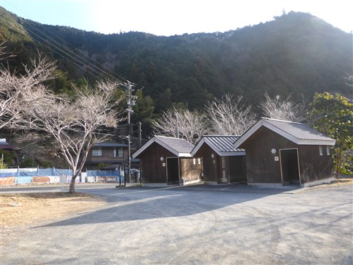
お茶所の静岡だけあって、お茶畑が多い。
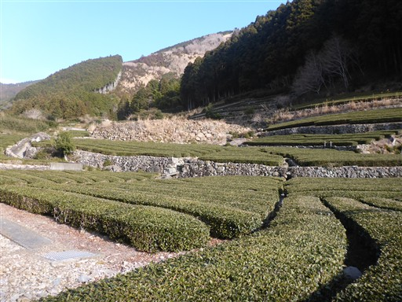
車道の終点が登山口だ。
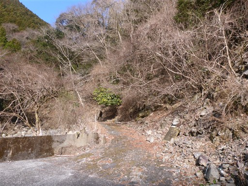
絶妙なバランスで置かれた石が並んでいる。いったい誰が置いたのだろう？
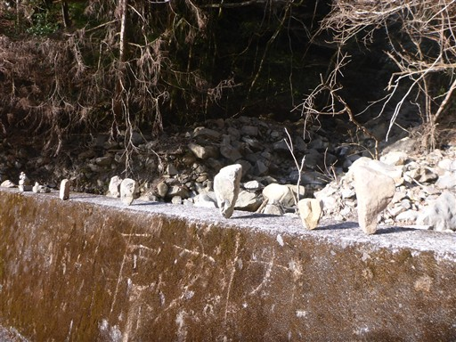
道路にバカでかい石が散在している。豪雨の時に流されてきたのだろう。
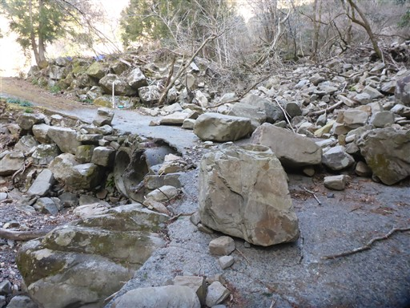
沢コースと山腹コースの分岐点。
まっすぐ行かないように木が置かれているが、気にせずまっすぐ沢コースを進む。これが大失敗。
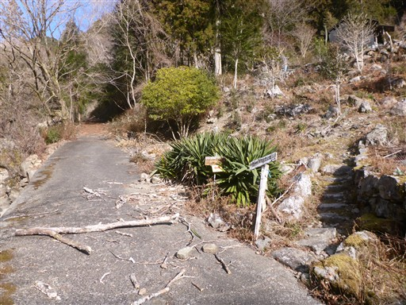
登山道がどこにあるのかよく分からない。沢沿いのコースというか、ほとんど沢登りだ。
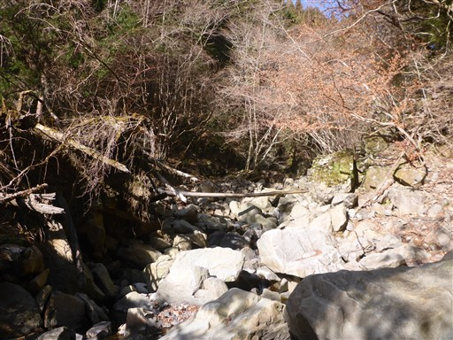
綺麗な淵。ここは右から超えるが、ちょっと難易度が高い。
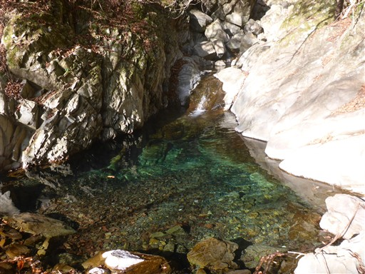
淵と滝がでてくる。ここは左から入ってくる小さな沢を遡って高巻きすることにする。
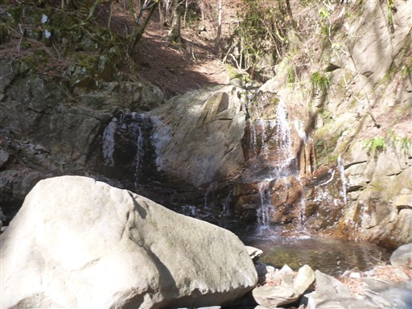
小さな沢を登ると登山道を見つけたので、ここからは登山道を歩く。
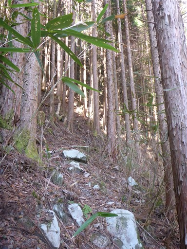
乗越え石。落っこちそうでちょっと乗るのが怖い梯子だ。
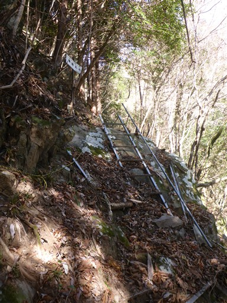
三条の滝。小さな滝だ。
先ほどの沢を歩き続けたら、ここにたどり着くことになる。
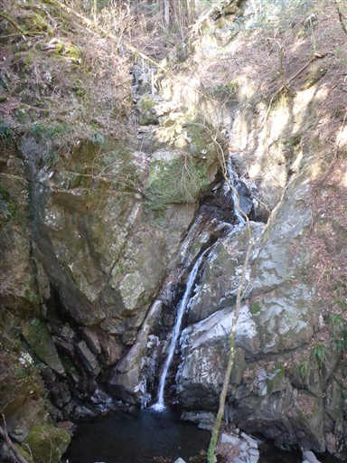
炭焼き釜跡。小さな窪みがある程度だ。
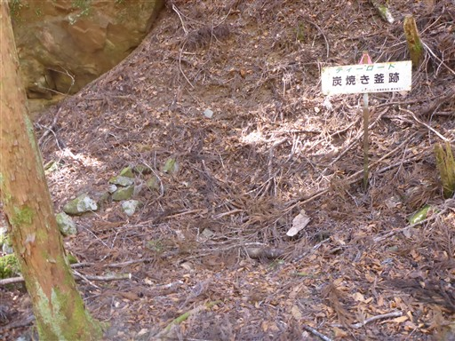
岩から染み出た水が凍り付いている。
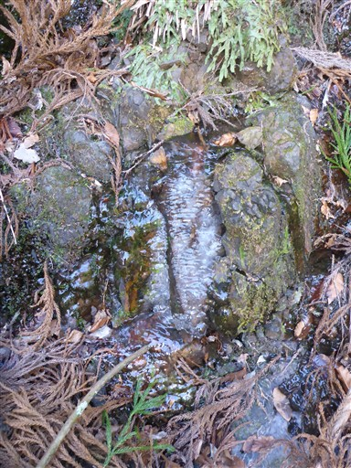
おおたるの滝。落差はあるが水量が少なく迫力がない。
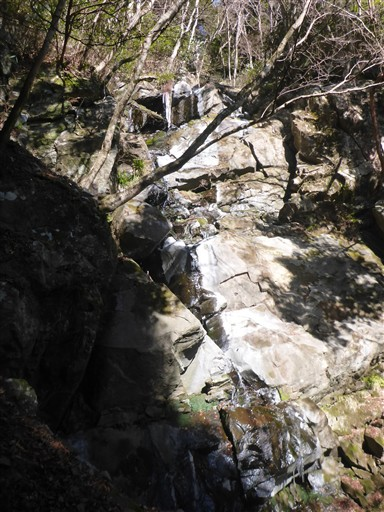
ロープで封鎖されている場所から出てくる。
今回歩いた沢コースは閉鎖されていて、山腹コースを歩くべきだったようだ。
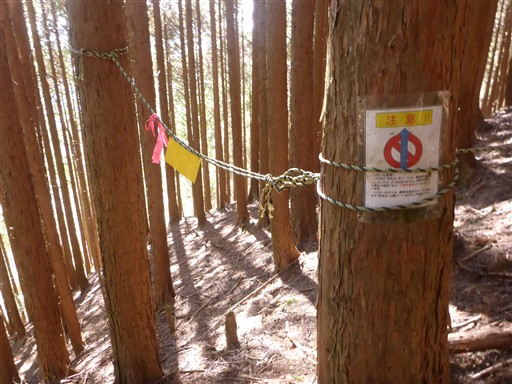
トラバース道。道が細くかなり歩きにくい。
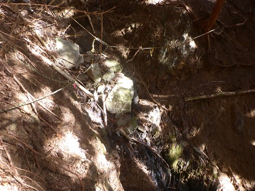
釜石峠に到着。以前ここにあったはずの歯痛地蔵を探してみたが見つからなかった。
帰ってから調べたら、もう少し降った場所にあるようだ。
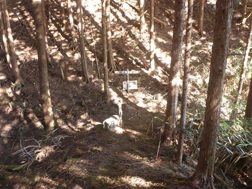
植林伐採場所からは大展望が広がる。
遠くに白い山々が見えている。蕎麦粒山や高塚山辺りだ。
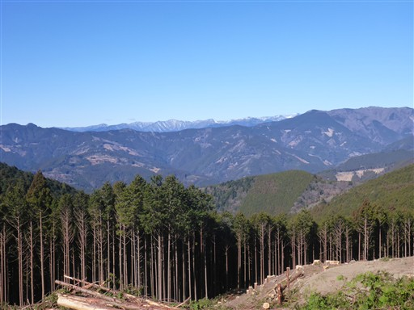
多くの木材が置かれている。
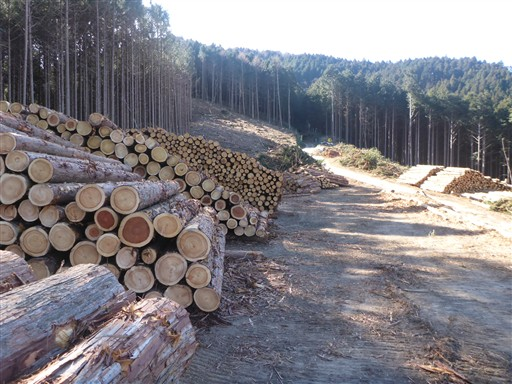
ここから笹薮の中の道を一登り。
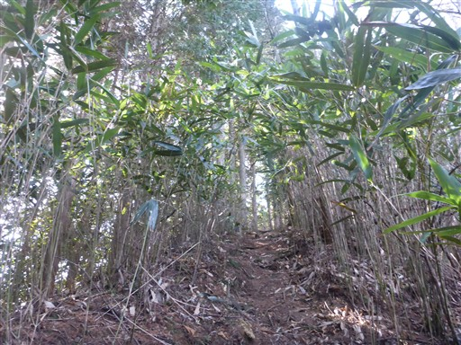
突先山山頂に到着。標高1022m。
2008年以来、実に17年振りの訪問だ。
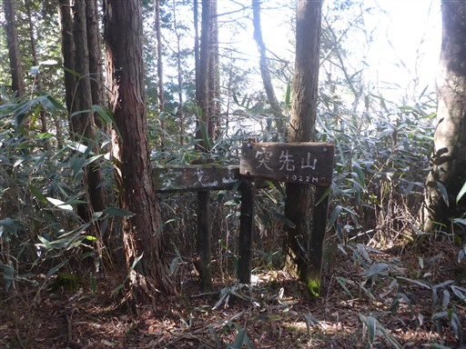
相変わらず冴えない山頂。この山に再訪することになるとは思わなかった。
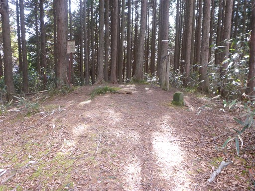
「トッサき山」の標識。カタカナとひらがなと漢字が混ざっている。
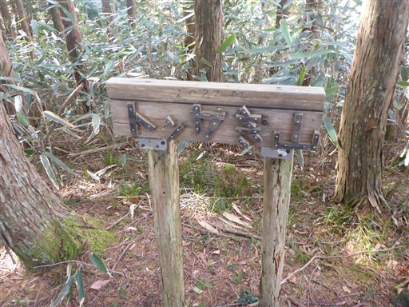
大山に向かって歩を進める。周囲はずっと植林地帯だ。
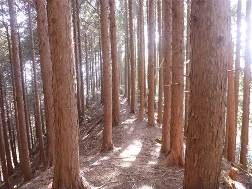
林道に出てくる。ここから大山までは林道歩き。
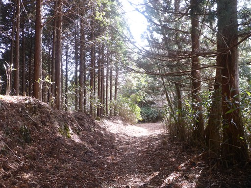
17年前には開いていた門が閉まっている。
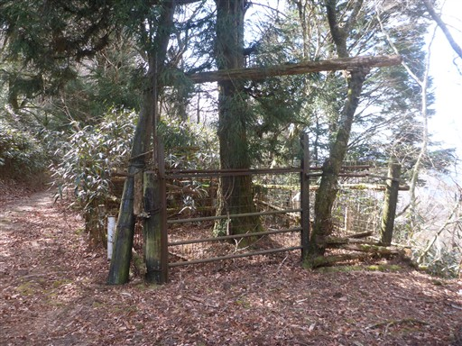
林道から視界が広がる。先ほどの展望よりもう少し山奥が見えている。
見えているのは南ア深南部の黒法師岳辺りの山々だ。
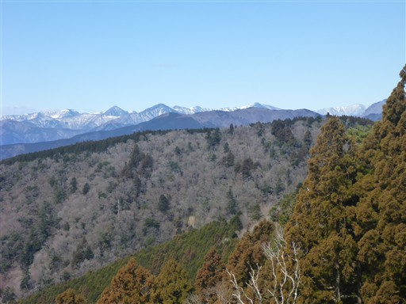
南アルプスの山々が見える箇所があったが、残念ながらすっきりとは見渡せない。
聖岳～赤石岳～荒川岳で真白だ。
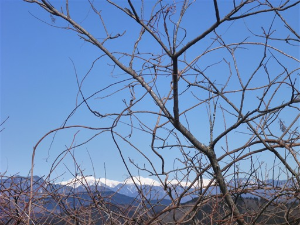
山頂に立つ電波塔が見えてきた。
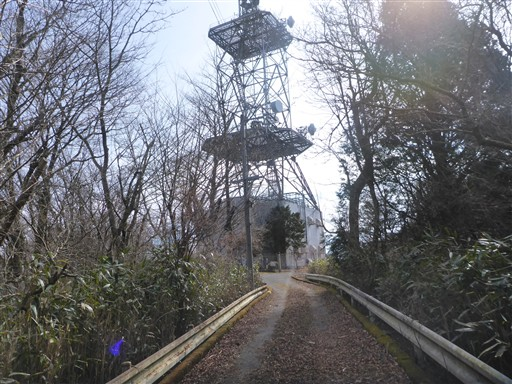
大山山頂に到着。標高986m。
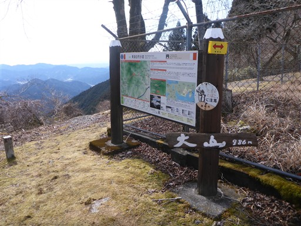
電波塔に占拠はされているが、そこそこのスペースがある。
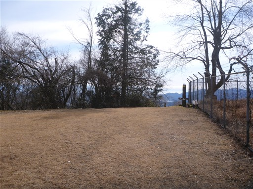
ベンチとテーブルがあったので、座って昼食タイムをとる。
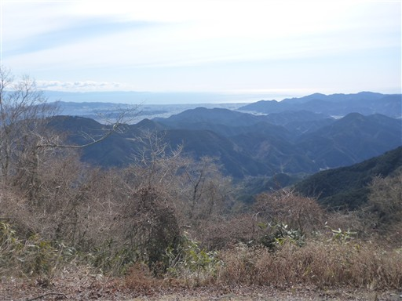
以前は大山から南の尾根を降った。今回は東の高山に向かう。
良い尾根道かと思ったらずっと植林地帯だ…
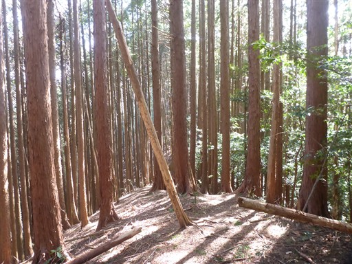
一箇所尾根が崩落している。
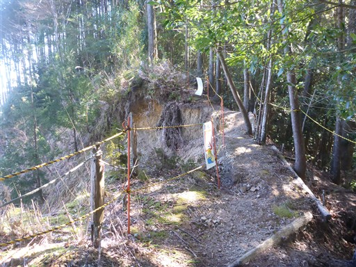
林道に出てくる。ここも路肩が崩落。
ガードレールの支柱はかなり深いことが分かる。
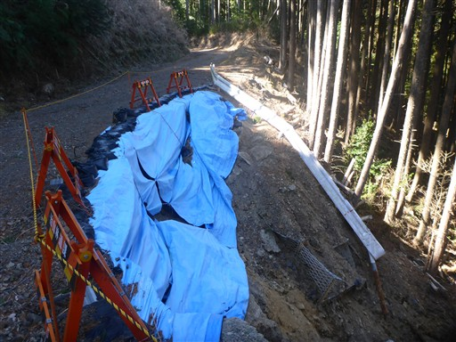
林道から再び登山道に入っていく。標識が無く分かりにくい分岐だ。
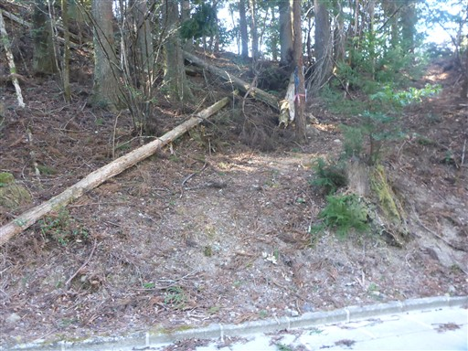
植林地帯を抜けると視界が広がってくる。
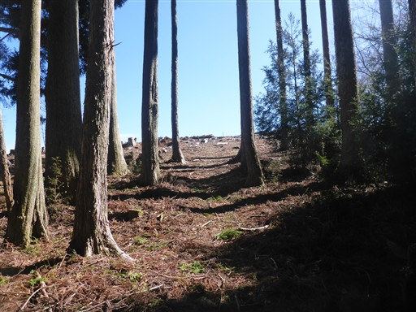
高山山頂に到着。標高717m。
ここまで誰とも出会わなかったが、この山頂は展望が良いので登山者がいる。
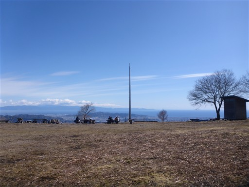
富士山がよく見える。
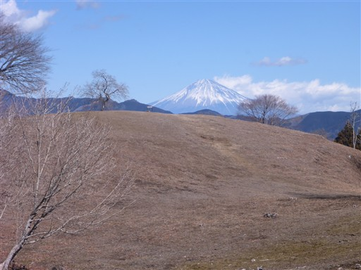
安倍奥東山稜の山々。南北に連なるまっすぐな尾根だ。
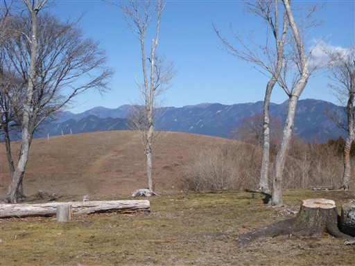
展望台があるので登ってみる。
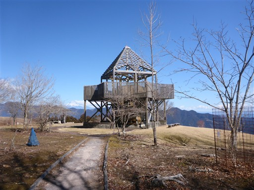
新しい木と古い木が混ざっている。大規模修繕が行われたのだろうか？
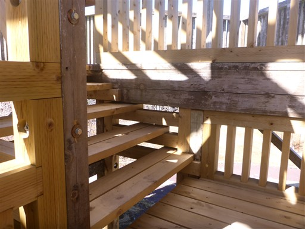
素晴らしい展望が広がる。
静岡市街と駿河湾、その奥は伊豆だ。
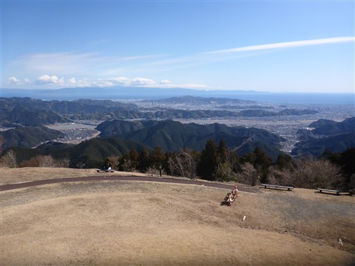
安倍奥の山々と富士山。
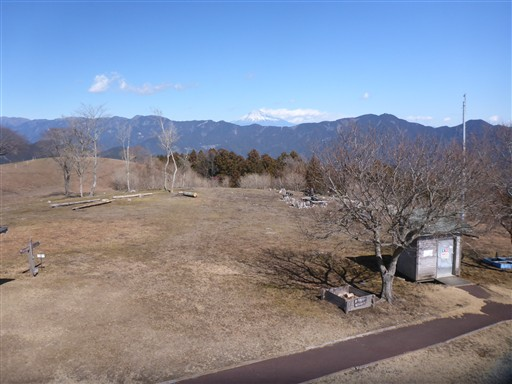
カブトムシの飼育場がある。誰が育てているのだろう？
ここから標高で130mほど降った場所に高山の池があるので、寄り道することにする。往復40分程度だ。
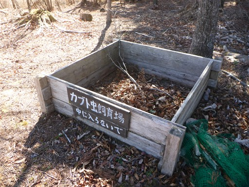
降り着いた場所にある高山の池には、なんと水がない。
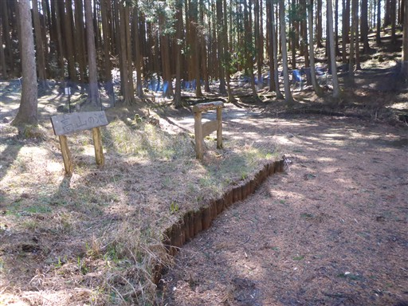
池の周りはネットで囲われていて、なんとも無粋だ。
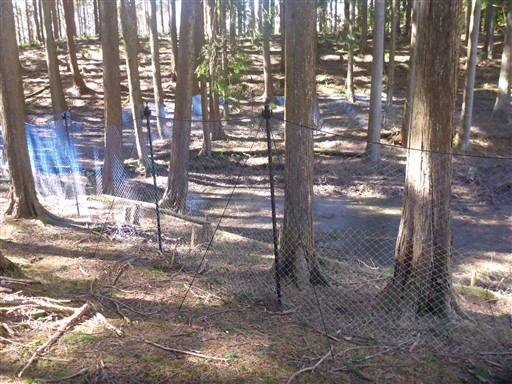
端にぬかるみがある程度。せっかく寄り道したが冴えない場所だった。
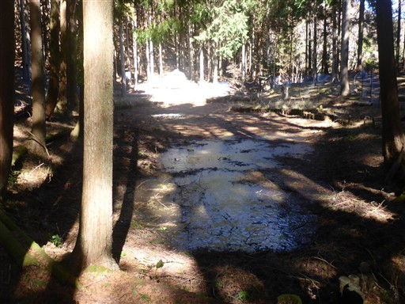
急坂を登って高山に戻ってくる。
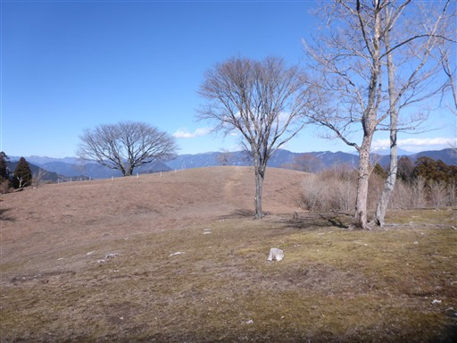
山頂にある一本桜。病気らしく近づけないようロープで囲われている。
牛ヶ峰の山頂標識。高山の別名だ。
高山という平凡な名前より牛ヶ峰の方が識別しやすいと思うのだが、
高山の名前の方が一般的なようだ。
標識のある場所からは山伏～大谷嶺～八紘嶺の山々が見える。
展望を満喫したら下山を開始する。
下山道も植林地帯が多い。
一本だけ、枝をあちこち伸ばしたお化けのような檜が立っている。
崩壊した作業小屋。
このような木を見ると、南国っぽさを感じる。
あとは延々と植林地帯の中を降る。
途中から作業用のレールが現れる。
手入れされなくて伸び放題になっている茶畑。

登山道を圧迫していて歩きにくい。
無事下山。ここからは車道歩きだ。
バスとすれ違う。駐車場がバスの終点なので、
あと15分ほど早く下山できていればあのバスに乗れたはずだ。
傾いた階段に猿を発見。距離があるので逃げようとはしない。
のどかで静かな風景。
足久保観光トイレの駐車場に戻ってくる。
今回の山行は高山からの展望は素晴らしかったが、それ以外に見所はなく、
完全にトレーニング山行になってしまった。